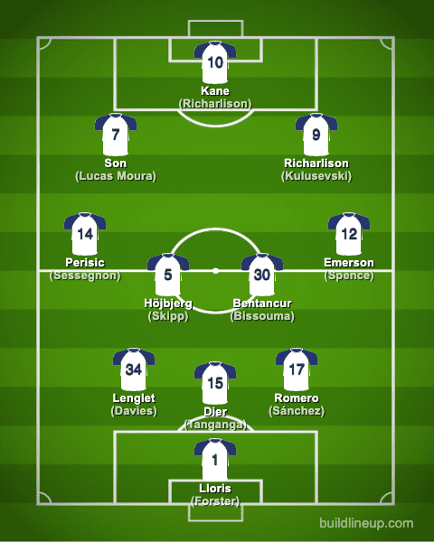

Tottenham Hotspur FC

This past season, the Spurs have relied on a 3-4-2-1 formation when playing.
Such formation includes 3 center backs, 2 wing-backs, 2 center-defensive midfielders,
2 wingers and a striker. This non-traditional formation relies on the wing-backs going
up and down the pitch and wingers tucking in as forwards. This formation allows for great
attacking play but lacks defense with Tottenham's wing-backs being more attacking oriented.
Watch the video for a deeper understanding!
With their newly appointed coach Ange Postecoglou, the team plans to switch their formation into a
4-3-3 with inverted fullbacks, another unique formation that coach has perfected with his old team Celtic
FC. It will take time for the players to get use to a new playstyle next season but it will hopefully lead
to sucess.